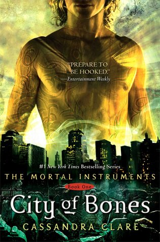

| Scythe Pretty much a perfect teen adventure novel. In a conflict-free world where humans have conquered death, elected Scythes must cull the human population. Two teens find themselves volunteered as apprentice-Scythes, and discover that of all the things that Scythes can kill, corruption is not one of them. Over the years, I've heard many books touted as the successor to Hunger Games, but SCYTHE is the first one that I would really, truly stand behind, as it offers teens a complementary reading experience to that series rather than a duplicate one. Like Hunger Games, SCYTHE invites readers to both turn pages quickly but also furrow their brows over the ethical questions it asks. YA has come to encompass a wide age range — one that I feel tends to skew ever older and sometimes forget the folks who are growing out of middle grade, but slowly. SCYTHE strikes me as a true teen novel, one that I will happily thrust into the hands of even reluctant 12-14 year old readers to show them what awaits them in genre fiction. It asks enough difficult questions to stick in the mind, but it never asks them at the expense of pacing or story. Moreover, it is very light on the romance, something that younger readers often prefer (and somewhat difficult to find in YA). | |
 | The Hunger Games THE HUNGER GAMES is a fantastic, breathless and somewhat brutal read that once you start you simply can’t put down again. Initially I had no idea what this book was about or what to expect in terms of YA writing, it had just been recommended to me by so many people and had such a buzz surrounding it that I had to find out for myself why. Well let me say I was not disappointed and have now joined the legions of Suzanne Collins fans in awaiting her next instalment. |
| The Maze Runner these books gave me life when i was a teenager. i was OBSESSED with high-stakes survival stories, especially with a dystopian atmosphere. and while this is a rare case where i think the film is better than the book, this story is just sooo good. firstly, can we take a moment to appreciate a lead male protagonist?! while its becoming a more frequent occurrence in recent YA lit, it felt quite uncommon a decade ago. and i adore thomas. he is the perfect balance of being a charmingly reckless boy, but also kind and altruistic. the pacing in this is nonstop action with so much mystery and intrigue. and while the sci-fi aspects of the grievers and the reason for the maze werent something i originally enjoyed, its grown on me over the years. regardless, i loved this then and i still love it now. | |
|  | City of Bones Oh my goodness, was this book an emotional journey or what? I have tried to read this book once before but was forced to put it down because of school required reading and didn't pick it back up until a couple of days ago. But let me just say, I am sure glad that I did. Not only was it full of action, adventure, and sprinkled with a little humor, but Cassandra Clare also added some other great elements to the book both relating to contemporary and fantastical topics. I loved the character development of every character and also the great plot twists in the story line. Even though I guessed a few of the twists ahead of time, Cassandra Clare's writing still sucked me into devouring this book and I still felt myself being surprised by the twists (which is the sign of a great book and author). I can't wait for City of Ashes to come in the mail so that I can continue on with this great series. |
| The Infernal Devices Don’t get me wrong... I have really enjoyed TMI series so far, but THIS one is my jam. I somehow picked this up at precisely the right time as I was in the mood for something historical along with an intriguing adventure and this was it. If TMI are my guilty pleasure/angsty teen romance, the TID are the more grown up and slightly darker version of those guilty pleasures. I was going to initially try to alternate these with my remaining TMI books, but I think I’ll stick with this trilogy first and return to those afterward. I can’t really add anything else that hasn’t been reviewed a million times over already, but I’m so happy that I finally get to see who these beloved characters are. |